About
I'm a Senior Software Development Engineer in Test (SDET) and full-stack tester from Vadodara, India, with 5+ years in QA and test automation across web, mobile, desktop and APIs. I build test automation frameworks that catch bugs before production.
At Silent Eight, I own end-to-end QA for 2 live projects on an AI-driven financial crime compliance platform. My main framework is Robot Framework, and I use AI (Claude) to design and automate complete API test suites faster.
Skills
Experience
Software Development Engineer in Test (SDET) · Silent Eight
- Own end-to-end QA for 2 live projects on an AI-driven financial crime compliance (AML) platform
- Built the core Robot Framework automation framework for UI, API and regression testing
- Automated the complete REST API test suite with AI-assisted automation (Claude)
- Jenkins CI/CD, JMeter performance testing, SQL data validation
Senior Automation Engineer · hikeQA
- Designed scalable automation frameworks; Selenium, Playwright and RestAssured (Java)
- Mentored junior QA engineers on POM and automation best practices
Automation Engineer · hikeQA
- Built Page Object Model frameworks with parallel execution and code reviews
QA Automation Engineer · Sadhrasya
- Found and logged 500+ bugs across web and Flutter mobile apps (Katalon Studio, TestProject)
Web Developer · Get Me Online
- Built 10+ client websites with WordPress, HTML, CSS and JavaScript
Projects
Robot Framework API Automation
Keyword-driven API tests: CRUD, auth, security, JSON Schema contract and data-driven cases. DevOps: lint, Python 3.11–3.13 matrix, Pabot parallel runs, Docker, Dependabot.
✓ 21 tests passing · Live test report →
Playwright + TypeScript UI & API
UI tests on Chromium, Firefox and WebKit plus API tests in one suite, POM, CI browser matrix and a merged HTML report.
✓ 26 tests passing · Live test report →
JMeter Performance Pipeline
Load test for a REST API in GitHub Actions and Jenkins, with an error-rate and p95 quality gate.
✓ 200 requests, 0 errors · Live dashboard →
QA Report Bot (GitHub Action)
My own GitHub Action: posts test results and flaky-test warnings on pull requests from any JUnit XML. Used in my Playwright project.
✓ Unit tested and self-tested in CI
QA DevOps Toolkit
WireMock mock API, Docker Compose test environment and a reusable GitHub Actions workflow other repos can call.
✓ 9 tests passing against the mock
AI Test Case Generator
My AI test-design assistant built on Claude: user stories and OpenAPI specs to test cases, exported as Markdown, CSV, Robot Framework and Gherkin.
✓ 12 unit tests · validated output
Database Testing Framework
PostgreSQL testing with pytest: schema, constraints, SQL business rules, data quality and ETL reconciliation.
✓ 27 tests on PostgreSQL 15, 16, 17
Playwright + JavaScript POM
Parallel cross-browser web testing with traces, retries and visual checks.
Selenium + Java POM
Web automation framework with Jenkins and Docker.
Appium + Java POM
Mobile automation for Android and iOS.
WinAppDriver + Java POM
Windows desktop application automation.
RestAssured API Framework
API testing with RestAssured, TestNG and Extent Reports.
Articles · 20 on Medium
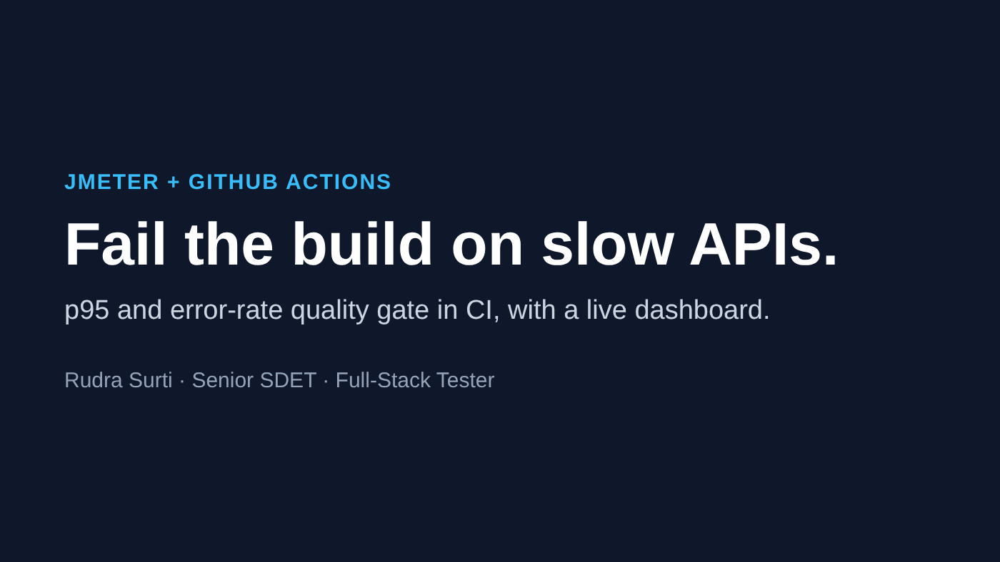
JMeter Performance Tests in CIJMeter · GitHub Actions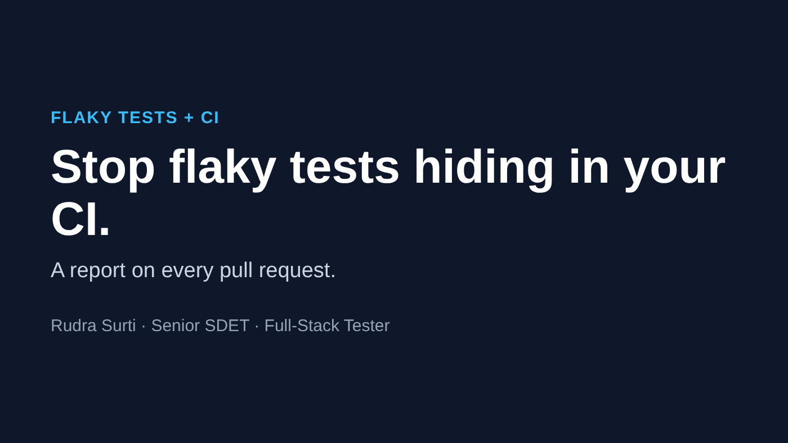
Stop Flaky Tests Hiding in Your CIFlaky tests · CI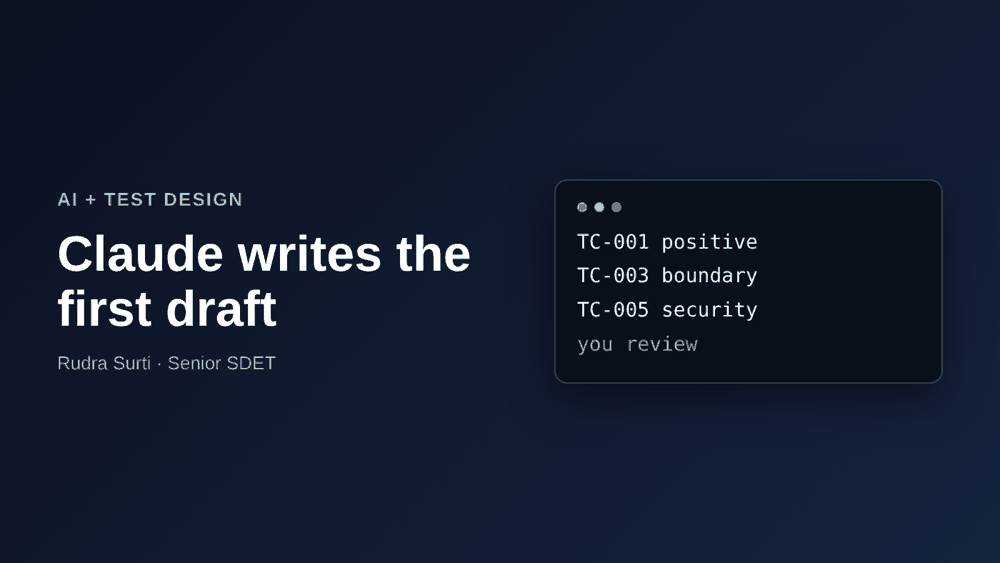
Using Claude to Write Test CasesAI testing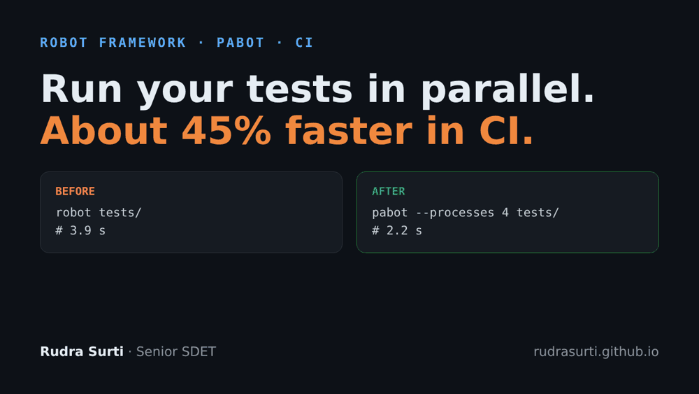
Robot Framework in Parallel with PabotRobot Framework · CI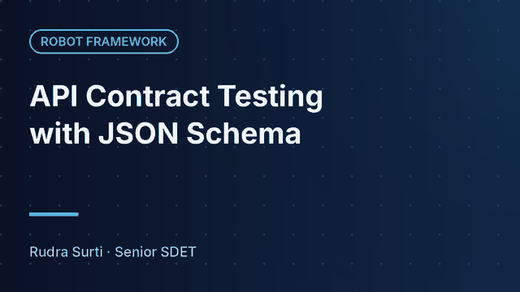
API Contract Testing with JSON SchemaRobot Framework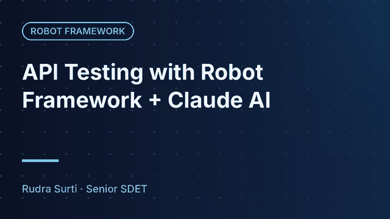
API Testing with Robot Framework + Claude AIRobot Framework Robot Framework Libraries for GUI TestingRobot Framework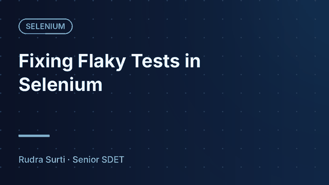
Fixing Flaky Tests in SeleniumSelenium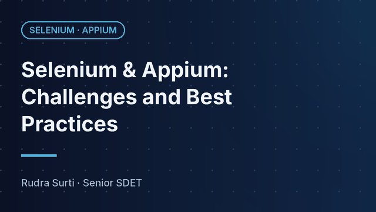
Selenium & Appium: Challenges and Best PracticesSelenium · Appium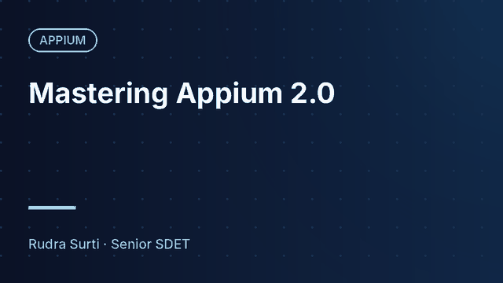
Mastering Appium 2.0Appium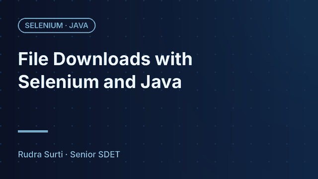
File Downloads with Selenium and JavaSelenium · Java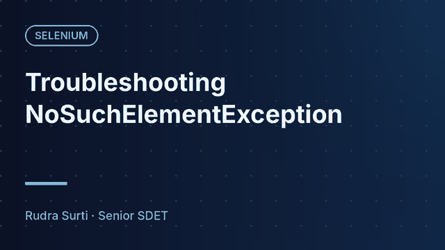
Troubleshooting NoSuchElementExceptionSelenium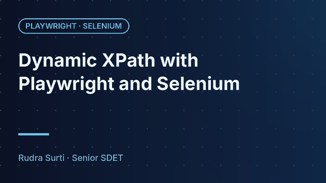
Dynamic XPath with Playwright and SeleniumPlaywright · Selenium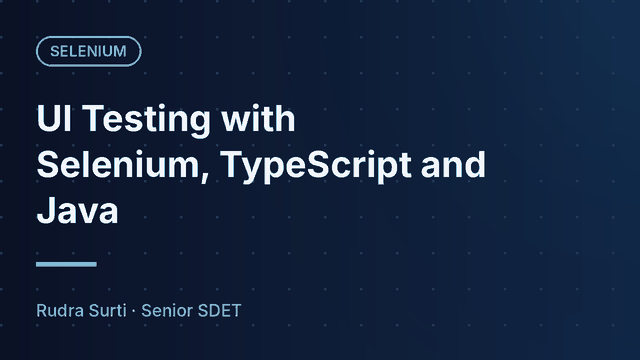
UI Testing with Selenium, TypeScript and JavaSelenium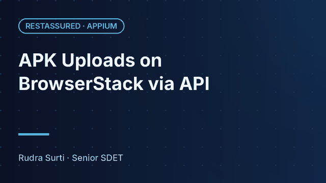
APK Uploads on BrowserStack via APIRestAssured · Appium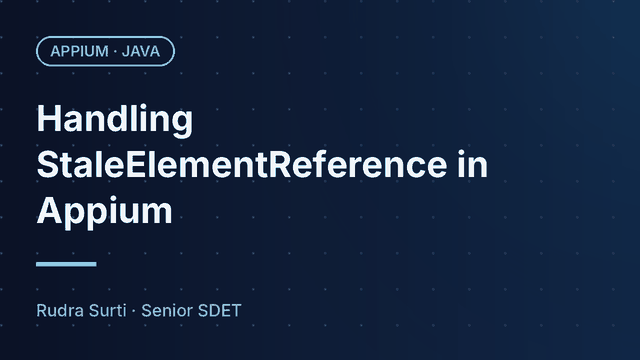
Handling StaleElementReference in AppiumAppium · Java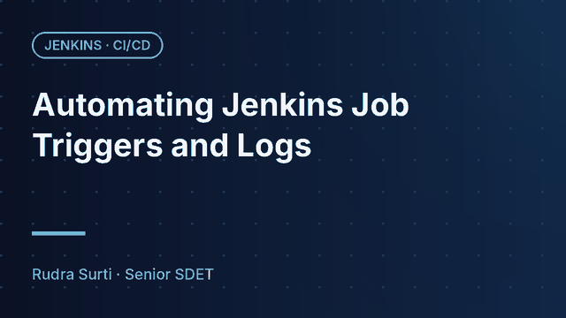
Automating Jenkins Job Triggers and LogsJenkins · CI/CD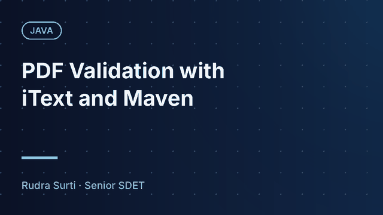
PDF Validation with iText and MavenJava Automating VPN Setup with Selenium + TestNGSelenium · TestNG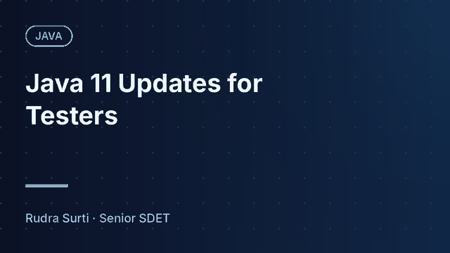
Java 11 Updates for TestersJavaEducation
Bachelor of Computer Applications (BCA), The Maharaja Sayajirao University of Baroda, Vadodara · 2017 – 2020